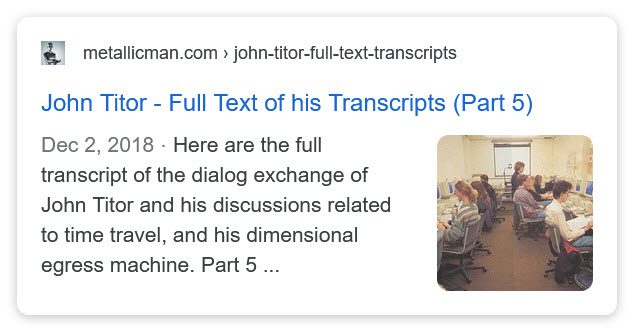
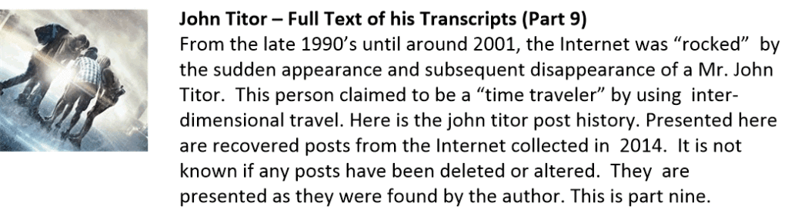

This is an index of all my article about John Titor. For those of you who are unaware, he was a person that appeared on the internet for a brief period back in 1998 who claimed to be a dimensional travel using a vehicle mounted time travel device.
A person, collectively known by the identity of “John Titor” claimed to utilize world-line (MWI egress) travel to collect artifacts from the past. He is an interesting subject to discuss. Here we have multiple posts in this regard.
They are;



